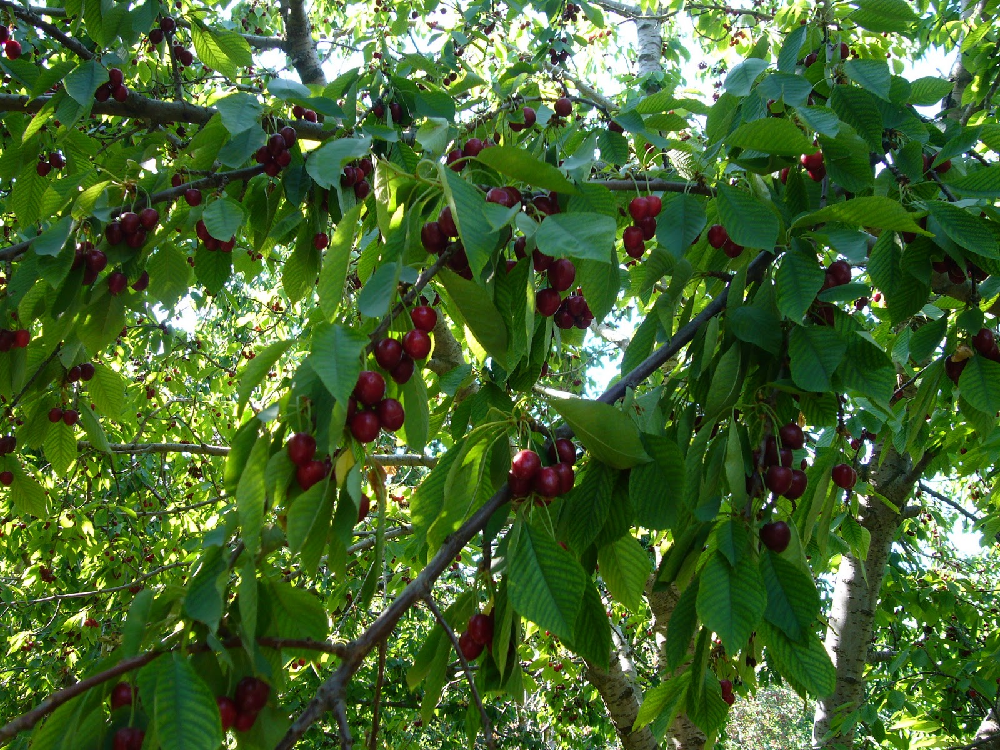

| İki bin dokuz yılında bulunduğumuz yerden Karatay ilçesine taşındık. Buraya taşınma nedenimiz anneannem ve teyzemlere daha yakın olmamızdı.
Benim iki teyzem, bir dayım var. Anne tarafından sekiz kuzenim var. En küçük kuzenim iki yaşında.
Altı amcam, bir halam var. Dolayısıyla baba tarafından oldukça fazla kuzenim var.
Amcalarımın üçü Antalya’da, biri Aydın’da, biri köyde, biri de Konya’da yaşıyor. Bizim köyümüz Hadim. Çok yeşil ve güzel bir köydür. Her yıl kiraz yetiştiririz.
Benim hobilerim kitap okumak, müzik dinlemek, pasta yapmaktır. Polisiye romanlarını çok severim. Her tarzdan müzik dinlerim.
Mutfağa girip bir şeyler yapmak beni oldukça mutlu eder. Bir gitarım var ama henüz yeterince iyi çalamıyorum.
İngilizce diziler izlemeyi severim. Farklı dillere ilgim var. Farklı dillerdeki şarkıları dinlemeyi de çok severim. |
 |